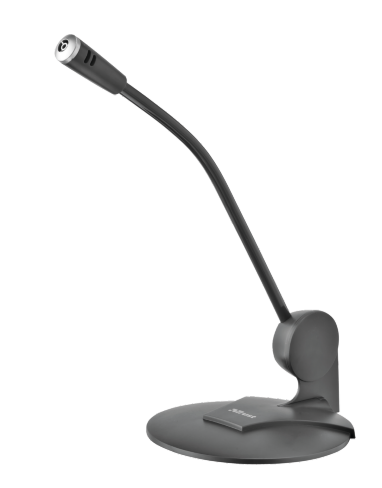
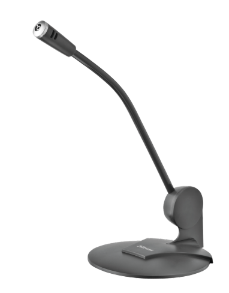

Entrada/Salida de datos
Nombre: Sergio Cano
Materia: Sistemas Operativos
Responsable: Dra. Carmen Carlota
Introducción
Una computadora tiene la capacidad de recibir y transmitir información desde o "hacia el exterior". Se puede ver la entrada/salida (E/S) como un conjunto de controladores de E/S; cada controlador se conecta al bus del sistema o a un conmutador centralizado y supervisa a uno o más dispositivos periféricos.
Un controlador de E/S no es simplemente una conexión fisica entre un dispositivo externo y el bus del sistema, sino que contiene cierta "inteligencia". Es decir, dispone de la lógica necesaria para realizar una función de comunicación entre los periféricos del computador y el bus
Dispositivos de entrada
 

Dispositivos de salida


E/S dirigidas por interrupciones
•El mecanismo de interrupción hace posible que el módulo provoque la detención temporal de la actividad que realiza el procesador para prestarle servicio a los sucesos de E/S cuando ocurran. Este mecanismo es asistido por el hardware para sincronizar el procesador con los sucesos de E/S (asíncronicos).
• Este forma de administrar la E/S resulta ventajosa respecto de la programada, porque evita el ciclo de espera activa.
Clases de interrupciones
• De programa: las genera alguna condición que ocurre
como resultado de una ejecución, sobreflujo, división sobre
cero o llamada ilegal.
• De temporizador: por un timer dentro del procesador a
intervalos regulares.
•De E/S generadas por un controlador de E/S para indicar la
terminación normal de una operación o diferentes condiciones de error.
•De falla de hardware: debidas a fallas, como en la paridad
de memoria.
E/S programada
La transferencia de datos bajo E/S programada es entre la CPU y un periférico transfiere datos hacia adentro y hacia fuera de la unidad de memoria por medio del canal de memoria, DMA solicita ciclos ...
de memoria concede la solicitud, el DMA transfiere los datos directamente a la memoria. La CPU solo retrasa su operación de acceso de memoria para transferencia directa.
Acceso directo a memoria
Se utiliza DMA para dispositivos de E/S de alta velocidad. E1 controlador del dispositivo transfiere un bloque de datos desde o para sus buffers de almacenamiento a memoria directamente sin intervención del CPU. Solo se produce una interrupción por bloque en lugar de tener una interrupción por cada byte (o palabra).